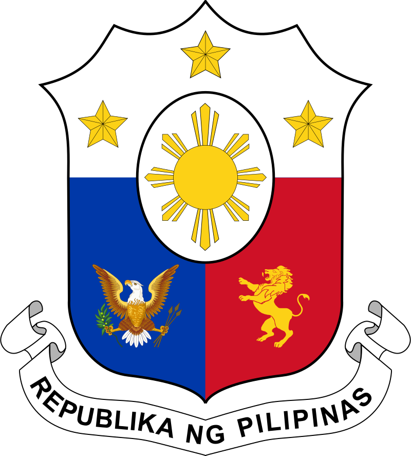

|  | |
|---|
I. Beginnings
The archipelago was produced by volcanic explosions around 50 million years ago. The earliest settlers migrated from the Asian mainland some 30,000 years ago, possibly via land bridges constructed during the glacial ages. After the year 1000 A.D. Muslim traders from Borneo were then welcomed by the coastal peasants, who also welcomed Chinese trade and immigration. The Philippines' original people were of Mongoloid heritage, which still dominates today. The presence of the Spanish Christians halted the steady expansion of Islam from Borneo into the middle and northern islands.
II. The West's discovery of the Philippines and the Revolution
Ferdinand Magellan, a Portuguese navigator who was traveling for Spain, claimed the Philippines in 1521, naming the islands after King Philip II of Spain. Then, they were known as Las Felipinas. Filipino culture had been heavily influenced by Spanish ideology and culture by the 1830s, to the point where the population started considering independence from Spain. Filipino agriculture was advanced by the Spanish administration to the point of self-sufficiency.
Filipino nationalists started speaking out after a few failed efforts at independence and an equal number of atrocities committed by Spain. Jose Rizal was one of the most well-known people of the period. He received his medical education at the Universities of Santo Tomas in the Philippines and Madrid. Two significant books by Rizal depicted the wrongdoings of Spanish authority. Despite being outlawed, the novels were smuggled into the Philippines and were read there. On December 30, 1896, the evening before he was put to death, Rizal dubbed the Philippines "the Pearl of the Oriental Seas." Every year on December 30, we remember him.
The revolution gained momentum after Rizal's execution. The Spanish were unable to put a stop to the uprising, even if the Filipino rebels under Emilio Aguinaldo's leadership did not achieve total independence. The Pact of Biak-na-Bato was reached in December 1897 after talks with Spain. All of the rebels received amnesty, and the revolution's leaders returned to Hong Kong after going into voluntary exile. Aguinaldo and his countrymen created the Philippine flag that is used today when they were in Hong Kong.
III. The American Era and Independence
Cuba, another province of Spain, was battling for independence from Spanish domination at the same time the Philippines were doing the same. However, the United States supported Cuba. War between the United States and Spain was about to break out when the USS Maine, an American warship, sunk in the port of Havana.
Spain was at war with the United States on April 25, 1898, and the U.S. Commodore George Dewey of the Asiatic Squadron was tasked with confronting the Spanish navy in the Philippines. On the morning of May 1, 1898, Dewey launched an assault on the Spanish armada from the USS Olympia. The Spanish fleet at Manila Bay was completely destroyed by the conflict, which lasted barely a few hours. Only minimal damage was incurred by the American navy.
With the signing of the Treaty of Paris on December 10, 1898, the Spanish-American War came to a conclusion. The American administration, however, was only concerned with Cuba's independence, not the Philippines'. By way of the Treaty, Spain gave the United States $20 million in exchange for the Philippines, Guam, and Puerto Rico, and Cuba obtained its freedom. American opinion on the morality of owning colonial dependencies was uneasy and divided given its own history of colonial revolution. The United States was unsure on what to do with the Philippines after almost accidentally acquiring them. The First Philippine Commission (Schurman Commission) was established by President McKinley on January 20, 1899, to offer recommendations.
Ten hours after the attack on Pearl Harbor, on December 8, 1941, the Japanese troops invaded the Philippines. On December 12, 1941, American troops commanded by General Douglas MacArthur retreated to Java. "I shall return," MacArthur said. In October 1944, General MacArthur maintained his word and descended on the island of Leyte with a sizable landing force. With the aid of Filipino rebels, American soldiers decimated the Japanese army over the course of the following four months.
The pre-war Commonwealth administration was reinstated by the United States after the war. The Philippines had become an independent republic by 1946 after leaving the Commonwealth.
Source/s: History of the Philippines, https://www.csub.edu/pacificrim/countryprospectus/history.htm
Sources(Photos from top to bottom): Photo by Denniz Futalan, Photo by Symeon Ekizoglou, Photo by Jeremiah Odejerte, Photo by Ferdie Drone